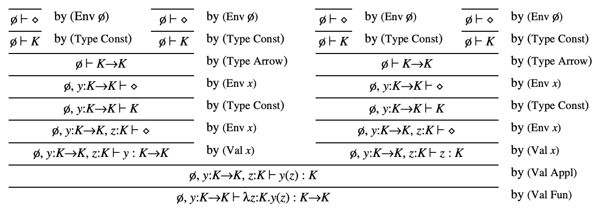

<!DOCTYPE html>


  


<html class="theme-next muse use-motion" lang="en">
<head>
  <meta charset="UTF-8"/>
<meta http-equiv="X-UA-Compatible" content="IE=edge" />
<meta name="viewport" content="width=device-width, initial-scale=1, maximum-scale=1"/>
<meta name="theme-color" content="#222">


  
  
    
    
  <script src="/lib/pace/pace.min.js?v=1.0.2"></script>
  <link href="/lib/pace/pace-theme-minimal.min.css?v=1.0.2" rel="stylesheet">


<meta http-equiv="Cache-Control" content="no-transform" />
<meta http-equiv="Cache-Control" content="no-siteapp" />


  <script>
  (function(i,s,o,g,r,a,m){i["DaoVoiceObject"]=r;i[r]=i[r]||function(){(i[r].q=i[r].q||[]).push(arguments)},i[r].l=1*new Date();a=s.createElement(o),m=s.getElementsByTagName(o)[0];a.async=1;a.src=g;a.charset="utf-8";m.parentNode.insertBefore(a,m)})(window,document,"script",('https:' == document.location.protocol ? 'https:' : 'http:') + "//widget.daovoice.io/widget/0f81ff2f.js","daovoice")
  daovoice('init', {
      app_id: "5d4a5755"
    });
  daovoice('update');
  </script>


  
  
  <link href="/lib/fancybox/source/jquery.fancybox.css?v=2.1.5" rel="stylesheet" type="text/css" />


  
  
  
  

  
    
    
  

  

  

  

  

  
    
    
    <link href="fonts.loli.net/css?family=Lato:300,300italic,400,400italic,700,700italic&subset=latin,latin-ext" rel="stylesheet" type="text/css">
  


<link href="/lib/font-awesome/css/font-awesome.min.css?v=4.6.2" rel="stylesheet" type="text/css" />

<link href="/css/main.css?v=5.1.2" rel="stylesheet" type="text/css" />


  <meta name="keywords" content="PL,Type System," />


  <link rel="alternate" href="/atom.xml" title="CodeSaw" type="application/atom+xml" />


  <link rel="shortcut icon" type="image/x-icon" href="/images/favicon.ico?v=5.1.2" />


<meta name="description" content="Abstract Type system的基本目的是防止在程序运行时发生execution error。这种Informal statement非形式化描述有很多内涵：首先该如何严格定义execution error；其次在这种定义下，描述absence of execution error也是Type system很nontrivial的性质——当PL .aka. programming lan">
<meta name="keywords" content="PL,Type System">
<meta property="og:type" content="article">
<meta property="og:title" content="Type system, a Sketchy view.">
<meta property="og:url" content="http://haotianmcihael.github.io/2021/06/16/Type-system-a-Sketchy-view/index.html">
<meta property="og:site_name" content="CodeSaw">
<meta property="og:description" content="Abstract Type system的基本目的是防止在程序运行时发生execution error。这种Informal statement非形式化描述有很多内涵：首先该如何严格定义execution error；其次在这种定义下，描述absence of execution error也是Type system很nontrivial的性质——当PL .aka. programming lan">
<meta property="og:locale" content="en">
<meta property="og:image" content="http://haotianmcihael.github.io/2021/06/16/Type-system-a-Sketchy-view/1.png">
<meta property="og:updated_time" content="2022-03-20T21:39:18.045Z">
<meta name="twitter:card" content="summary">
<meta name="twitter:title" content="Type system, a Sketchy view.">
<meta name="twitter:description" content="Abstract Type system的基本目的是防止在程序运行时发生execution error。这种Informal statement非形式化描述有很多内涵：首先该如何严格定义execution error；其次在这种定义下，描述absence of execution error也是Type system很nontrivial的性质——当PL .aka. programming lan">
<meta name="twitter:image" content="http://haotianmcihael.github.io/2021/06/16/Type-system-a-Sketchy-view/1.png">


<script type="text/javascript" id="hexo.configurations">
  var NexT = window.NexT || {};
  var CONFIG = {
    root: '/',
    scheme: 'Muse',
    sidebar: {"position":"left","display":"post","offset":12,"offset_float":12,"b2t":false,"scrollpercent":false,"onmobile":false},
    fancybox: true,
    tabs: true,
    motion: true,
    duoshuo: {
      userId: '0',
      author: 'Author'
    },
    algolia: {
      applicationID: '',
      apiKey: '',
      indexName: '',
      hits: {"per_page":10},
      labels: {"input_placeholder":"Search for Posts","hits_empty":"We didn't find any results for the search: ${query}","hits_stats":"${hits} results found in ${time} ms"}
    }
  };
</script>


  <link rel="canonical" href="http://haotianmcihael.github.io/2021/06/16/Type-system-a-Sketchy-view/"/>


  <title>Type system, a Sketchy view. | CodeSaw</title>
  


</head>

<body itemscope itemtype="http://schema.org/WebPage" lang="en">

  
  
    
  

  <div class="container sidebar-position-left page-post-detail ">
    <div class="headband"></div>
    <a href="https://github.com/haotianmichael" class="github-corner" aria-label="View source on GitHub"><svg width="80" height="80" viewBox="0 0 250 250" style="fill:#151513; color:#fff; position: absolute; top: 0; border: 0; right: 0;" aria-hidden="true"><path d="M0,0 L115,115 L130,115 L142,142 L250,250 L250,0 Z"></path><path d="M128.3,109.0 C113.8,99.7 119.0,89.6 119.0,89.6 C122.0,82.7 120.5,78.6 120.5,78.6 C119.2,72.0 123.4,76.3 123.4,76.3 C127.3,80.9 125.5,87.3 125.5,87.3 C122.9,97.6 130.6,101.9 134.4,103.2" fill="currentColor" style="transform-origin: 130px 106px;" class="octo-arm"></path><path d="M115.0,115.0 C114.9,115.1 118.7,116.5 119.8,115.4 L133.7,101.6 C136.9,99.2 139.9,98.4 142.2,98.6 C133.8,88.0 127.5,74.4 143.8,58.0 C148.5,53.4 154.0,51.2 159.7,51.0 C160.3,49.4 163.2,43.6 171.4,40.1 C171.4,40.1 176.1,42.5 178.8,56.2 C183.1,58.6 187.2,61.8 190.9,65.4 C194.5,69.0 197.7,73.2 200.1,77.6 C213.8,80.2 216.3,84.9 216.3,84.9 C212.7,93.1 206.9,96.0 205.4,96.6 C205.1,102.4 203.0,107.8 198.3,112.5 C181.9,128.9 168.3,122.5 157.7,114.1 C157.9,116.9 156.7,120.9 152.7,124.9 L141.0,136.5 C139.8,137.7 141.6,141.9 141.8,141.8 Z" fill="currentColor" class="octo-body"></path></svg></a><style>.github-corner:hover .octo-arm{animation:octocat-wave 560ms ease-in-out}@keyframes octocat-wave{0%,100%{transform:rotate(0)}20%,60%{transform:rotate(-25deg)}40%,80%{transform:rotate(10deg)}}@media (max-width:500px){.github-corner:hover .octo-arm{animation:none}.github-corner .octo-arm{animation:octocat-wave 560ms ease-in-out}}</style>
    <header id="header" class="header" itemscope itemtype="http://schema.org/WPHeader">
      <div class="header-inner"><div class="site-brand-wrapper">
  <div class="site-meta ">
    

    <div class="custom-logo-site-title">
      <a href="/"  class="brand" rel="start">
        <span class="logo-line-before"><i></i></span>
        <span class="site-title">CodeSaw</span>
        <span class="logo-line-after"><i></i></span>
      </a>
    </div>
      
        <p class="site-subtitle"></p>
      
  </div>

  <div class="site-nav-toggle">
    <button>
      <span class="btn-bar"></span>
      <span class="btn-bar"></span>
      <span class="btn-bar"></span>
    </button>
  </div>
</div>

<nav class="site-nav">
  

  
    <ul id="menu" class="menu">
      
        
        <li class="menu-item menu-item-home">
          <a href="/" rel="section">
            
              <i class="menu-item-icon fa fa-fw fa-home"></i> <br />
            
            Home
          </a>
        </li>
      
        
        <li class="menu-item menu-item-archives">
          <a href="/archives/" rel="section">
            
              <i class="menu-item-icon fa fa-fw fa-archive"></i> <br />
            
            Archives
          </a>
        </li>
      
        
        <li class="menu-item menu-item-categories">
          <a href="/categories/" rel="section">
            
              <i class="menu-item-icon fa fa-fw fa-th"></i> <br />
            
            Categories
          </a>
        </li>
      
        
        <li class="menu-item menu-item-tags">
          <a href="/tags/" rel="section">
            
              <i class="menu-item-icon fa fa-fw fa-tags"></i> <br />
            
            Tags
          </a>
        </li>
      
        
        <li class="menu-item menu-item-algorithm">
          <a href="/algorithm/" rel="section">
            
              <i class="menu-item-icon fa fa-fw fa-desktop"></i> <br />
            
            Algorithm
          </a>
        </li>
      
        
        <li class="menu-item menu-item-about">
          <a href="/about/" rel="section">
            
              <i class="menu-item-icon fa fa-fw fa-user"></i> <br />
            
            About
          </a>
        </li>
      

      
        <li class="menu-item menu-item-search">
          
            <a href="javascript:;" class="popup-trigger">
          
            
              <i class="menu-item-icon fa fa-search fa-fw"></i> <br />
            
            Search
          </a>
        </li>
      
    </ul>
  

  
    <div class="site-search">
      
  <div class="popup search-popup local-search-popup">
  <div class="local-search-header clearfix">
    <span class="search-icon">
      <i class="fa fa-search"></i>
    </span>
    <span class="popup-btn-close">
      <i class="fa fa-times-circle"></i>
    </span>
    <div class="local-search-input-wrapper">
      <input autocomplete="off"
             placeholder="Searching..." spellcheck="false"
             type="text" id="local-search-input">
    </div>
  </div>
  <div id="local-search-result"></div>
</div>


    </div>
  
</nav>


 </div>
    </header>

    <main id="main" class="main">
      <div class="main-inner">
        <div class="content-wrap">
          <div id="content" class="content">
            

  <div id="posts" class="posts-expand">
    

  

  
  
  

  <article class="post post-type-normal" itemscope itemtype="http://schema.org/Article">
  
  
  
  <div class="post-block">
    <link itemprop="mainEntityOfPage" href="http://haotianmcihael.github.io/2021/06/16/Type-system-a-Sketchy-view/">

    <span hidden itemprop="author" itemscope itemtype="http://schema.org/Person">
      <meta itemprop="name" content="HaotianMichael">
      <meta itemprop="description" content="">
      <meta itemprop="image" content="/uploads/avatar.jpg">
    </span>

    <span hidden itemprop="publisher" itemscope itemtype="http://schema.org/Organization">
      <meta itemprop="name" content="CodeSaw">
    </span>

    
      <header class="post-header">

        
        
          <h1 class="post-title" itemprop="name headline">Type system, a Sketchy view.</h1>
        

        <div class="post-meta">
          <span class="post-time">
            
              <span class="post-meta-item-icon">
                <i class="fa fa-calendar-o"></i>
              </span>
              
                <span class="post-meta-item-text">Posted on</span>
              
              <time title="Post created" itemprop="dateCreated datePublished" datetime="2021-06-15T18:02:32Z">
                2021-06-15
              </time>
            

            

            
          </span>

          
            <span class="post-category" >
            
              <span class="post-meta-divider">|</span>
            
              <span class="post-meta-item-icon">
                <i class="fa fa-folder-o"></i>
              </span>
              
                <span class="post-meta-item-text">In</span>
              
              
                <span itemprop="about" itemscope itemtype="http://schema.org/Thing">
                  <a href="/categories/𝛌-calculus/" itemprop="url" rel="index">
                    <span itemprop="name">𝛌-calculus</span>
                  </a>
                </span>

                
                
              
            </span>
          

          
            
          

          
          

          

          
            <div class="post-wordcount">
              
                
                <span class="post-meta-item-icon">
                  <i class="fa fa-file-word-o"></i>
                </span>
                
                  <span class="post-meta-item-text">Words count in article</span>
                
                <span title="Words count in article">
                  8.9k
                </span>
              

              
                <span class="post-meta-divider">|</span>
              

              
                <span class="post-meta-item-icon">
                  <i class="fa fa-clock-o"></i>
                </span>
                
                  <span class="post-meta-item-text">Reading time</span>
                
                <span title="Reading time">
                  39
                </span>
              
            </div>
          

          

        </div>
      </header>
    

    
    
    
    <div class="post-body" itemprop="articleBody">

      
      

      
        <h3 id="abstract">Abstract</h3>
<p><code>Type system</code>的基本目的是防止在程序运行时发生<code>execution error</code>。这种<code>Informal statement</code>非形式化描述有很多内涵：首先该如何严格定义<code>execution error</code>；其次在这种定义下，描述<code>absence of execution error</code>也是<code>Type system</code>很<code>nontrivial</code>的性质——当<code>PL .aka. programming language</code>的所有运行时行为都能确保这种性质的话，我们就说该语言是<code>type sound</code>的。事实证明为了更加没有歧义的描述<code>PL</code>的<code>type soundness</code>，需要做大量的分析和证明。因此针对<code>Type system</code>的分类，描述和研究过程逐渐演变成为一套<code>formal discipline</code>即形式化体系。 <span class="math display">\[
\frac{\Gamma_{1} \vdash \Im_{1}  ...  \Gamma_{n} \vdash \Im_{n}}{\Gamma \vdash \Im}
\]</span></p>
<p><code>The formalization of Type system</code>需要一套精确的符号和定义系统，一个<strong>严格正确</strong>的<code>Type system</code>可以对语言定义的各个重要性质进行<strong>完整</strong>的判断。而非形式化的描述甚至做不到完整概括语言的<code>type structure</code>则更谈不上实现上的唯一性。比如不同的编译器对于同一套语言<code>Type system</code>的实现往往不尽相同，甚至有一些<code>type unsound</code>的语言定义导致一段代码明明通过<code>typechecker</code>的检查但在运行时奔溃掉。理想情况下我们说<code>formal Type system</code>应该是所有<code>typed programming languages</code>内核定义的一部分。这样的话，<code>typechecking</code>算法就可以严格按照精确的类型<code>spec</code>执行，从某种程度上该语言可以看成是<code>Type sound</code>的。</p>
<a id="more"></a>
<h3 id="introduction">Introduction</h3>
<h4 id="execution-errors">Execution errors</h4>
<p>比较典型的<code>execution error</code>就是系统出现了意外的<code>software faults</code>比如<code>illegal instruction fault</code>或者<code>illegal memory reference fault</code>等。但是也存在<code>execution error</code>会没有预兆的发生从而导致数据错误。进一步的还存在像<code>divide by zero</code>，或者<code>derferencing nil</code>等<strong><code>Type system</code>无法避免</strong>的<code>sofeware faults</code>。但是有的语言虽然没有<code>Type system</code>却也不会发生<code>software faults</code>。</p>
<h5 id="safety">safety</h5>
<p>首先对<code>execution errors</code>进行分类：</p>
<ul>
<li><code>trapped errors:</code> 导致计算行为瞬间奔溃停止
<ul>
<li>除零错误</li>
<li>内存非法访问</li>
</ul></li>
<li><code>untrapped errors:</code>刚开始不会很明显，但是后续会导致任意错误
<ul>
<li>没有运行时边界检查的数组越界</li>
<li>引用错误地址</li>
</ul></li>
</ul>
<blockquote>
<p>A program fragment is <strong>safe</strong> if it does not cause <strong>untrapped errors</strong> to occur.</p>
</blockquote>
<p>所有程序都是<code>safe</code>的语言称为<code>safe languages</code>——因此<code>safe languages</code>是要能排除一切潜在错误。<code>untyped languages</code>通过<code>runtime checks</code>来达到<code>safety</code>——<code>typed languages</code>通过<code>static</code>静态(比如编译期)排除一切潜在错误行为来达到<code>safety</code>，其也可以同时采用<code>runtime</code>和<code>static</code>检查。</p>
<h5 id="well-behaved">well-behaved</h5>
<p>针对通用编程语言，我们应该提炼出<code>execution errors</code>的一个子集作为<code>forbidden errors</code>。这个子集应该包含所有的<code>untrapped errors</code>，以及一部分<code>trapped errors</code>。</p>
<blockquote>
<p>A program fragment is said to have <strong>good behavior/well-behaved</strong>, if it doesn't cause any <strong>forbidden error</strong> to occur.</p>
</blockquote>
<p><strong>对比一下<code>safe</code>和<code>well-behaved</code>的定义就可以发现<code>well-behaved</code>的代码是<code>safe</code>的，但反之不然。</strong>所有代码都是<code>well-behaved</code>的语言被称为<code>strongly checked</code>。针对一个<code>Strongly checked</code>的语言的特征：</p>
<ul>
<li>不会出现<code>untrapped errors</code>（<code>safe</code>的保证）</li>
<li>不会出现包含在<code>forbidden errors</code>中的部分<code>trapped errors</code></li>
<li>其余的<code>trapped errors</code>发生也只会由于程序员的自身问题导致</li>
</ul>
<p><code>Typed languages</code>通过运行静态检查(比如编译期)来实现语言的<code>well-behaved</code>——这样的语言被称为是<code>staticlly checked</code>，整个检查过程被称为<code>typechecking</code>，执行该检查过程的算法被称为<code>type-checker</code>。一段经过<code>type-checker</code>检查的程序被称为<code>well-typed</code>。<code>staticlly checked languages</code>有<code>ML,Java,Pascal</code>等。</p>
<p><code>Untyped languages</code>通过运行时检查<code>runtime checks</code>来排除所有的<code>forbidden errors</code>。比如它们会检查所有数组边界，所有除法操作，并在错误出现的时候触发异常。整个检查过程被称为<code>dynamic checking</code>。<code>LISP</code>就是这样一门语言，这样的语言尽管没有静态检查，没有类型系统，但却还是<code>strongly checked</code>。</p>
<h5 id="safety-or-performance">safety or Performance</h5>
<p><code>type system</code>的首要目标就是要通过排除所有程序运行时的<code>untrapped errors</code>来确保程序的<code>safety</code>。但是实际上很多静态语言都不能保证<code>safety</code>——它们的类型系统并没有完全排除掉运行时的<code>untrapped errors</code>。这些语言被称为是<code>weakly-typed</code>，而且其程度都各自不同。<code>C</code>在<code>pointer arithmetic</code>和<code>casting</code>上有大量<code>unsafe</code>的操作。</p>
<p>大多数<code>untyped languages</code>都是<code>completely safe</code>的，否则程序既没有编译期检查又没有运行时检查一旦出错后果不堪设想。比如<code>Assembly</code>就属于这种语言范畴。</p>
<table>
<thead>
<tr class="header">
<th></th>
<th>Typed</th>
<th>Untyped</th>
</tr>
</thead>
<tbody>
<tr class="odd">
<td>Safe</td>
<td>ML、Java</td>
<td>LISP</td>
</tr>
<tr class="even">
<td>Unsafe</td>
<td>C</td>
<td>Assembly</td>
</tr>
</tbody>
</table>
<p>但程序语言的<code>safety</code>属性一般需要以牺牲性能为代价。但是究其优势：可以通过引入<code>garbage collection</code>来确保运行时结构的完整，最后其对于像<code>OS/web browsers</code>等应用的安全提供了保证。</p>
<p>那实现<code>safety</code>是通过类型系统即静态还是运行时即动态:</p>
<ul>
<li><code>untyped languages</code>会导致大量<code>safety</code>问题</li>
<li><code>untyped languages</code>比如<code>LISP</code>要比<code>weakly-typed languages</code>比如<code>C</code>更难维护</li>
</ul>
<h4 id="typed-and-untyped-languages">Typed and untyped languages</h4>
<p>程序变量在程序运行期间可以假定一系列的值。</p>
<blockquote>
<p><font color="red">An upper bound of such a range is called a <strong>type</strong> of the variable.</font></p>
</blockquote>
<p>该变量的一个类型就是其值的一个<code>upper bound</code>。比如一个<code>Boolean</code>类型的变量在程序运行过程中只能是<code>true/false</code>，而<code>not(x)</code>在运行时也是有意义的。一门所有变量都有<code>nontrivial types</code>的语言称为<code>typed languages</code>。而没有限制变量范围的语言称为<code>untyped languages</code>——其变量没有<code>type</code>，或者说其变量都有一个<code>universal type</code>。</p>
<p><code>Type system</code>是<code>type languages</code>的核心部分，用来跟踪<code>types of variables</code>，更普遍的用来跟踪<code>types of expression</code>。只有遵守<code>type system</code>的代码才可以成为该<code>type language</code>的合格程序。而<code>type system</code>可能不会在语言的语法中显式出现。</p>
<blockquote>
<p><font color="red">Type systems are used to determine whether programs are <strong>well behaved.</strong></font></p>
</blockquote>
<ul>
<li><code>Explicitly typed:</code> <code>types</code>是语法的一部分</li>
<li><code>implicitly typed:</code> <code>types</code>不会显式出现在语法中</li>
</ul>
<h5 id="properties-of-type-systems">properties of type systems</h5>
<p>我们在这里假设程序语言需要即<code>safe</code>又<code>type</code>，因此引入<code>type system</code>的讨论。</p>
<p><code>Types</code>，作为程序语言的一部分有着和其他<code>program annotations</code>编程标记更加实用的特征。总体上来说，对于程序语言行为的<code>annotations</code>涵盖了<code>informal comments</code>，<code>formal spec</code>，甚至<code>theorem proving</code>等。而<code>Types</code>就在几个范畴的中心地带——其比<code>comments</code>更加精确，但是比<code>formal spec</code>更加简洁和易用。总体来讲<code>type system</code>有如下属性：</p>
<ul>
<li><code>decidably verifiable:</code> 需要有算法(指的是<code>typechecker</code>)来确保程序是<code>well-behaved</code>的。<code>type system</code>的目的不仅仅是描述开发者的意图，更重要的是为了捕捉程序运行时错误。（<code>formal spec</code>只能进行描述）</li>
<li><code>transparent:</code> 开发者对于<code>typechecker</code>的行为应该很易于上手。比如很容易看出某段代码是否可以通过类型测试，如果没有通过则问题一定是开发者自身（<code>automatic theorem proving</code>相比之下更晦涩难懂）</li>
<li><code>enforceable:</code> <code>type declarations</code>应该被尽可能的完成静态/动态检查。类型声明和其对应程序之间的一致性应该符合验证。（<code>comments</code>无法做到这一点）</li>
</ul>
<h4 id="how-type-systems-are-formalized">How type systems are formalized</h4>
<p>我们如何保证<code>well-typed</code>的程序确实是<code>well-behaved</code>的呢？</p>
<blockquote>
<p>这里的<code>well-typed</code>指的是通过人为设计的类型系统算法<code>typechecker</code>，而<code>well-behaved</code>指的是在运行时不会出现<code>forbidden errors</code>。</p>
</blockquote>
<p><code>Formal type systems</code>就是在PL文档中对<code>type system</code>非形式化描述背后的数学特征描述。一旦某一个<code>type system</code>被形式化了，我们只需证明以下<code>soundness theorem</code>：</p>
<blockquote>
<p><em>Well-typed</em> programs are <em>well-behaved</em>.</p>
</blockquote>
<p>一旦该定理成立，我们就说该<code>type system</code>是<code>sound</code>的。</p>
<blockquote>
<p>Good behavior of all programs of a typed language and soundness of its type system mean the same thing.</p>
</blockquote>
<h5 id="type-and-term">type and term</h5>
<p>为了形式化一门程序语言的<code>type system</code>并且证明<code>soundness theorem</code>，就需要在本质上将整个语言都形式化。首先要做的就是描述该语言的语法<code>syntax</code>。对于大多数语言来说这就意味着描述其<code>types and terms</code>的语法。</p>
<ul>
<li><code>Types</code>描述程序的静态行为</li>
<li><code>Terms(statements, expressions, and other program fragments)</code>描述算法的行为</li>
</ul>
<h5 id="scoping-rules">scoping rules</h5>
<p>下一步是定义语言的<code>scoping</code>规则——该规则明确定义了<font color="red">标识符的作用域即标识符<code>binding locations</code>声明处和<code>occurrences</code>使用处的联系。<code>Typed languages</code>需要这种<code>scoping</code>是静态的，换句话讲就是说标识符的声明<code>binding locations</code>一定要在运行时之前。</font>而标识符的声明处<code>binding locations</code>往往是由语言语法决定的，因此<code>static scoping</code>也叫做<code>lexical scoping</code>。与之相反的就是<code>dynamic scoping</code>。</p>
<blockquote>
<p>Scoping can be formally specified by defining the set of<font color="red"> free variables</font> of a program fragment (which involves specifying how variables are bound by declarations). The associated notion of substitution of types or terms for free variables can then be defined.</p>
</blockquote>
<p>对于作用域的形式化可以定义一个<code>program fragment</code>的一系列<code>free variable</code>,接着可以定义如何使用<code>types/terms</code>来替换这些变量。</p>
<ul>
<li><font color="blue">scoping rules, binding locations, free variable</font></li>
</ul>
<h5 id="type-rules">type rules</h5>
<p>当这些搞定后，开始定义程序语言的<code>type rules</code>：其通过<code>M:A</code>的形式定义了<code>terms M</code>和<code>types A</code>之间的一种<code>has-type</code>关系。有些语言还通过<code>A&lt;:B</code>的形式定义<code>types</code>之间的<code>subtype-of</code>关系，还有通过<code>A=B</code>的形式定义<code>types</code>之间的<code>equal-type</code>关系。</p>
<blockquote>
<p>The collection of type rules of a language forms its type system.</p>
</blockquote>
<h5 id="static-typing-environments">static typing environments</h5>
<p>在形式化<code>type rules</code>之前还需要引入另一个不会显式出现在语法中的基本概念——<font color="red"><code>static typing environments</code>：其在处理<code>program fragments</code>的过程中记录<code>free variable</code>的<code>type</code>。</font>一般和编译器在处理<code>typechecking</code>趟时其符号表的内容相对应。</p>
<blockquote>
<p><font color="red">The type rules are always formulated with respect to a static environment for the fragment being typechecked.</font></p>
</blockquote>
<p><font color="blue">比如一个<code>has-type</code>关系<code>M:A</code>，但是这个关系下<code>type A</code>和<code>term M</code>相关的<code>free variable</code>的信息在<code>static environment 𝚪</code>里面的</font>。故这个关系全称应该是<code>𝚪 ⊢ M:A</code>，意思是<strong>在静态环境𝚪下，M有A类型</strong>。</p>
<h5 id="semantics">semantics</h5>
<p>形式化程序语言的最后一步就是将其语义定义为一种<code>terms</code>和<code>results</code>之间的<code>relation</code>。该<code>relation</code>的形式很大程度上取决于所采用的语义学风格。语言的语义和<code>type system</code>是相互影响的——<code>term</code>的<code>type</code>和其<code>results</code>应该一样或正相关，这是<code>soundness theorem</code>的本质。</p>
<blockquote>
<p><font color="red">the types of a term and of itsresult should be the same (or appropriately related); this is the essence of the soundness theorem.</font></p>
</blockquote>
<p><code>type system</code>的基本概念对几乎所有编程范式（函数式，命令式，并行）都是适用的。独立的<code>type rules</code>应用于不同的范式时基本不能改变。比如<code>call-by-name</code>和<code>call-by-value</code>的函数的基本语义是一样的。</p>
<p>这章节我们讨论了独立于语义的<code>type system</code>。但是需要肯定的是，<code>type system</code>一定和一门语义以及该语义所带的<code>soundness</code>相关。</p>
<blockquote>
<p>The techniques of structrual operational semantics deal uniformly with a large collection of programming paradigms.</p>
</blockquote>
<h4 id="type-equivalence">Type equivalence</h4>
<p>正向前文所说的，大多数<code>nontrivial type system</code>都会定义一种<code>equal type</code>的关系代表<code>type equivalence</code>。这一属性在定义一门编程语言时候异常重要：<strong>什么时候两个分别定义的<code>type expression</code>是一致的？</strong>比如两个由相似类型连接的不同<code>type names</code>：</p>
<blockquote>
<p>type X = Bool.</p>
<p>type Y = Bool.</p>
</blockquote>
<p>如果<code>type names</code>X和Y因为与相似类型关联而匹配，我们称为<code>structural equivalence</code>。如果由于<code>type names</code>不同而无法匹配（并没有参考相关联的类型），我们称为<code>by-name equivalence</code>。</p>
<p>通常情况下大多数语言会使用<code>structural and by-name</code>的混合。<code>Pure structural equivalence</code>可以通过<code>type rules</code>精确定义，然而<code>by-name equivalence</code>更难确定。后续的讨论我们基本讨论<code>structural equivalence</code>，而<code>by-name equivalence</code>可以使用前者很好的进行模拟。</p>
<h3 id="the-language-of-type-systems">The language of type systems</h3>
<p><code>Type system</code>定义程序语言的<code>type rules</code>——独立于特定的<code>typechecking algorithms</code>。其和<code>formal grammar</code>定义程序语言的<code>syntax</code>但独立于特定的<code>parsing algorithms</code>是同样的道理。</p>
<p>将<code>type system</code>和<code>typechecking algorithms</code>分离更加高效：<code>type system</code>属于语言定义<code>language definitions</code>，而<code>algorithms</code>属于编译器实现。通过<code>type system</code>映射语言的类型信息要比用编译器算法更加简洁。同一套<code>type system</code>在不同编译器上可能会有多种<code>typechecking</code>算法。</p>
<h4 id="judgements">Judgements</h4>
<p><code>Type system</code>由一套特殊的形式化方法描述。下面开始讨论：</p>
<p>首先引入一套形式化机制称作<code>judgments</code>: <span class="math display">\[
\Gamma \vdash \Im  \qquad \text{ℑ is an assertion;the free variables of ℑ are declared in 𝚪}
\]</span> 读作<code>𝚪 entails ℑ</code>(𝚪包含ℑ)。</p>
<p><code>𝚪</code>是一个<code>static typing environment</code>，比如一个由不同变量及其相应<code>type</code>组成的有序链表，通过∅, x<sub>1</sub>:A<sub>1</sub>, ..., x<sub>n</sub>:A<sub>n</sub>的形式。空环境记作∅，而在𝚪环境中声明的变量集合x<sub>1</sub>...x<sub>n</sub>记作<code>dom(𝚪)</code>——𝚪的<code>domain</code>值域。</p>
<p><font color="red">ℑ是一种断言，其形式随着不同的<code>judgement</code>会变化，但是ℑ中的所有<code>free variables</code>都必须<strong>声明</strong>在𝚪中。</font></p>
<blockquote>
<p><font color="blue"> a term M has a type A with respect to a static typing environment for the free variables of M.   最重要的<code>judgement</code>是<code>typing judgement</code>，其断言为：对于针对<code>M</code>中所有<code>free variable</code>的静态环境<code>𝚪</code>的来说，<code>term M</code>的类型是<code>A</code>。</font></p>
</blockquote>
<ul>
<li>Term: statements, expressions, and other program fragments</li>
</ul>
<p><span class="math display">\[
\Gamma \vdash M:A   \qquad \text{M has type A in 𝚪}
\]</span></p>
<p>比如举例如下： <span class="math display">\[
\begin{aligned}
&amp;\emptyset \vdash true:Bool &amp;&amp;\qquad \text{true has type Bool} \\
&amp;\emptyset,x:Nat \vdash x+1:Nat &amp;&amp;\qquad \text{x+1 has type Nat, provided that x has type Nat}\\
\end{aligned}
\]</span> 其他类型的<code>judgement</code>也很常见，比如下面断言为<code>an environment is well-formed</code>: <span class="math display">\[
\Gamma \vdash \diamond  \qquad \text{𝚪 is well-formed(i.e., it has been properly constructed)}
\]</span></p>
<h4 id="type-rules-1">Type rules</h4>
<p><code>Type rules</code>：在<code>valid judgements</code>的前提下，断言<code>certain judgement</code>有效。一般都以某些本质上有效的<code>judgements</code>作为开始(常见的有：∅⊢◇,表示<code>empty environment is well-formed</code>)。 <span class="math display">\[
\begin{aligned}
&amp;\text{ (Rule name)} \quad \quad \text{ (Annotations)}    \\
&amp;\frac{\Gamma_{1} \vdash \Im_{1}  \quad ... \quad \Gamma_{n} \vdash \Im_{n} \text{ (Annotations)}}{\Gamma \vdash \Im}
\end{aligned}
\qquad \text{ General form of a type rule.}
\]</span> 每一个<code>type rule</code>的格式：在水平线上面的是一系列<code>premise judgements</code>:𝚪<sub>i</sub> ⊢ ℑ<sub>i</sub>，而在水平线下面的是<code>conclusion judgements</code>: 𝚪⊢ℑ。当所有的<code>premise</code>都满足之后，<code>conclusion</code>一定成立。<code>premise</code>的数量可以为零。而且每一个<code>type rules</code>都有一个名字：根据惯例，名字的第一个单词是由<code>conclusion judgements</code>规定的~比如<code>conclusion</code>是一个<code>value typing judgement</code>的<code>type rules</code>的名字就会叫做<code>Val...</code>。必要的时候，限制<code>rule</code>的一些条件和需要用到的一些缩写都会在<code>typ rule</code>或者<code>premise</code>旁边进行批注。比如一下例子： <span class="math display">\[
\begin{aligned}
&amp;\text{ (Val n) (n=0,1,...)} \\
&amp;\frac{ \Gamma \vdash \diamond }{\Gamma \vdash n:Nat}
\end{aligned} \qquad 
\begin{aligned}
&amp;\text{ (Val+)} \\
&amp;\frac{\Gamma \vdash M:Nat \qquad \Gamma \vdash N:Nat}{\Gamma \vdash \text{M+N:Nat}} 
\end{aligned}
\]</span> 比如第一个<code>type rule</code>表示所有的<code>numeral</code>自然数都是<code>Nat</code>类型。<font color="red">第二个【结合<code>Typing Judgements</code>】</font><code>type rule</code>表示两个<code>Nat</code>类型的表达式<code>M</code>和<code>N</code>可以构成一个更大的<code>Nat</code>类型的表达式<code>M+N</code>，<font color="blue">Moreover, the environment 𝚪 for M and N, which declares the types of any free variable of M and N, carries over to M+N并且静态环境<code>𝚪</code>不仅声明了<code>M</code>和<code>N</code>的所有<code>free variable</code>的类型，更涵盖了<code>M+N</code>的类型。</font></p>
<p><font color="orange">注释：首先<code>static typing environment</code>记录程序中<code>free variable</code>的类型信息-These are used to record the types of free variables during the processing of program fragments;   其次<code>typing judgements</code>是断言<code>term</code>有类型-It asserts that a term M has a type A with respect to a static typing environment for the free variables of M。</font></p>
<p>基本的规则表示<code>empty environment</code>是<code>well formed</code>的，不需要前提： <span class="math display">\[
\text{(Env ∅)} \\ \frac{}{\emptyset \vdash \diamond}
\]</span></p>
<blockquote>
<p>A collection of type rules is called a (formal) type system. Technically, type system fit into the general framework of <em>formal proof system</em>: collections of rules used to carry out step-by-step deductions.</p>
<p><strong>The deductions carried out in type systems concern the typing of prorgams.</strong></p>
</blockquote>
<p>技术上讲，<code>type system</code>满足形式化证明系统<code>formal proof systems</code>的基本框架：一系列的<code>type rules</code>被用来执行一步一步的推理演绎。类型系统推理的过程就是程序中类型的概念。</p>
<h4 id="type-derivations">Type derivations</h4>
<p><code>derivation</code>在<code>type system</code>中是以<code>judgements tree</code>的形式，上面是叶子，最后是根——每一个<code>judgement</code>都可以从其上面的叶子部分根据一定规则推导得到。<code>type system</code>最基本的要求就是看其<code>derivation</code>是否是正确构建的。</p>
在一套<code>type system</code>中，能正确应用<code>type rules</code>推导出来的一定是<code>valid judgement</code>。比如下面： $$
<span class="math display">\[\begin{aligned}
\dfrac{\dfrac{\dfrac{}{\emptyset \vdash \diamond}  \text{by(Env ∅)}}{\emptyset \vdash 1:Nat}  \text{by(Val n)} \quad \dfrac{\dfrac{}{\emptyset \vdash \diamond}  \text{by(Env ∅)}}{\emptyset \vdash 2:Nat}  \text{by(Val n)}}{\emptyset \vdash 1+2:Nat}  \text{by(Val +)}

\end{aligned}\]</span>
<p>$$ 根据前面给出的规则，我们可以构造出新的<code>derivation</code>即<code>∅⊢1+2:Nat</code>是<code>valid judgement</code>。其中每一步推导用到的规则都标记在右边。</p>
<h4 id="well-typing-and-type-inference">Well typing and type inference</h4>
<p>给定一个<code>type system</code>，如果存在一个类型<code>A</code>使得<code>𝚪⊢M:A</code>是有效的——那么对于环境<code>𝚪</code>来说<code>M is well typed</code>的，即<code>term M</code>被赋予某个类型。</p>
<blockquote>
<p>The discovery of a derivation(and hence of a type) for a term is called the <strong>type inference</strong>.</p>
</blockquote>
<p>比如在一个简单的<code>type system</code>中，其有<code>rules(Env ∅),(Val n),(Val +)</code>，那么根据前面的推导，在空环境<code>empty environment</code>下的<code>term 1+2</code>可以被推导出Nat类型。假设我们给该类型系统加入<code>premise 𝚪⊢◇</code>和<code>conclusion 𝚪⊢true:Booll</code>，那么我们将无法对<code>term true+1</code>推导出任何类型，这是因为没有一个将<code>natural</code>和<code>boolean</code>类型相加的<code>rule</code>。因为无法推导出<code>1+true</code>的<code>derivations</code>，我们就说<code>1+true</code>是<code>not typeable</code>的，或者说其发生了<code>typing error</code>。我们继续给上述类型系统加入<code>premise 𝚪⊢M:Nat</code>和<code>conclusion 𝚪⊢N:Bool</code>和<code>conclusion 𝚪⊢M+N:Nat</code>（通过将true解释为整数1）。那么<code>term 1+true</code>将会被推导出一个<code>Nat</code>类型。</p>
<p>可以看出，<code>type inference</code>非常依赖<code>type system</code>。一个类型推导算法可以很简单，也可以很难或者压根不可能实现。虽然类型系统通常是抽象表达设计，但是其实用性则完全取决于类型推导算法的可用性。</p>
<p><code>explicitly typed languages</code>比如<code>pascal</code>的类型推导相对容易简单，而<code>implicitly typed languages</code>比如<code>ML</code>的类型推导相对更困难一些。类型推导的基本思路很清晰易懂，但是真正实际中的实现却相当复杂并且还在研究中。</p>
<blockquote>
<p>Type inference problem becomes particularly hard in the presence of <strong>polymorphism.</strong></p>
</blockquote>
<p>对于<code>explicitly typed languages</code>比如<code>Ada, CLU, ML</code>等的<code>polymorphic features</code>的<code>type inference</code>在实践中得到了解决——是通过纯算法问题，而不是在引入相关<code>type system</code>的基础上解决的。<strong>而往往最纯粹，最普遍的针对多态的类型推导问题都是在𝛌演算中讨论的。</strong> 然而该问题的结局却依赖于不切实际的冗长的一些<code>typing annotations</code>。为了让该多态方案更加实际化一点，需要省略一些类型信息。这个领域依然是目前学术界的研究重点。</p>
<h4 id="type-soundness">Type soundness</h4>
<p>最后需要注意的是，<code>type system</code>不是一系列任意的<code>type rules</code>的堆积。<code>well-typing</code>在语义层面对应着<code>good behavior</code>。通常通过证明<code>type soundness theorem</code>来检查类型系统内部的一致性——因此类型系统需要语义作为基础。对于<code>denotational semantics</code>来说如果<code>∅⊢M:A</code>是有效的，则〖M〗∊〖A〗(即M的值属于类型A所表示的集合)，对于<code>operational semantics</code>来说如果<code>∅⊢M:A</code>成立，并且M推导出M'，则<code>∅⊢M':A</code>成立。对于两个例子来说，<code>type soundness theorem</code>断言<code>well-typed</code>的程序不会在计算过程中出现<code>execution errors</code>。</p>
<h3 id="first-order-type-systems">First-order Type Systems</h3>
<p>在大多数过程间语言中实现的<code>type system</code>称为<code>first order</code>。核心就是包括<strong>高阶函数<code>higher order functions</code></strong>。最精简的<code>first-order type system</code>可以由<code>untyped 𝛌-calculus</code>表示，形式为<code>𝛌x.M</code>即有参数<code>x</code>和返回值<code>M</code>的匿名函数。</p>
<p><code>first-order typed 𝛌-calculus</code>被称为F<sub>1</sub>。它和<code>untyped 𝛌-calculus</code>不同的地方在于对<code>𝛌-abstractions</code>加上了类型信息——<code>𝛌x:A.M</code>其中<code>x</code>是参数，<code>A</code>是参数类型，而<code>M</code>是函数体。<strong>将<code>𝛌x.M</code>转化为<code>𝛌x:A.M</code>是将非类型语言进阶为类型语言的关键步骤：<code>bound variables</code>获取到了类型信息。</strong>因为F<sub>1</sub>是建立在函数基础上的，所以引入<code>A⟶B</code>带有参数类型A和返回值类型B的函数类型。介绍构建函数类型所需的基本类型：引入<code>Basic</code>表示该类型集合，引入<code>K∊Basic</code>表示集合中的任何一个该类型。</p>
<h4 id="syntax-of-f1">Syntax of F<sub>1</sub></h4>
<blockquote>
<p>A,B ::= types</p>
<p>​ K K∊Basic basic types</p>
<p>​ A⟶B function types</p>
<p>M,N ::= terms</p>
<p>​ x variable</p>
<p>​ 𝛌x:A.M function</p>
<p>​ M N application</p>
</blockquote>
<p>F<sub>1</sub>的语法如上图所示。这里有必要简单说明一下<code>typed language</code>的语法。对于<code>untyped language</code>来说<code>context-free syntax</code>就可以完整描述整个语言。而对于<code>typed language</code>来说却不够；<font color="red"><code>typed language</code>不仅仅需要<code>type system</code>来完善程序语言的<code>legality</code>，还需要<code>context-free syntax</code>来表示定义<code>free/bound variable</code>概念——即定义程序语言的<code>scoping rules</code>。</font>在作用域的基础上，那些只有<code>bound variable</code>不同的<code>term</code>会被称为是语法上相同的<code>syntactically identical</code>比如<code>𝛌x:K.x</code>和<code>𝛌y:K.y</code>。</p>
<h4 id="basic-of-f1">Basic of F<sub>1</sub></h4>
<p>F<sub>1</sub>需要三个<code>judgements</code>如下：</p>
<table>
<thead>
<tr class="header">
<th>𝚪⊢◇</th>
<th>𝚪 is a well-formed environment</th>
</tr>
</thead>
<tbody>
<tr class="odd">
<td>𝚪⊢A</td>
<td>A is a well-formed type in 𝚪</td>
</tr>
<tr class="even">
<td>𝚪⊢M:A</td>
<td>M is a well-formed term of type A in 𝚪</td>
</tr>
</tbody>
</table>
<p>其中<code>𝚪⊢A</code>有点冗余，因为所有语法上正确的类型<code>A</code>在任何环境<code>𝚪</code>下都是<code>well-formed</code>的。而在<code>second-order</code>系统中，类型的<code>well-formed</code>就不单单取决于语法了，这时候<code>𝚪⊢A</code>就很重要了。证明这些<code>judgement</code>的有效性的<code>type rules</code>在下面表格中。 <span class="math display">\[
\begin{aligned}
&amp;\text{(Env ∅)} \qquad &amp;&amp;\text{(Env x)} \\ 
&amp;\frac{}{\emptyset \vdash \diamond} \qquad &amp;&amp;\frac{\Gamma \vdash A \quad x\notin dom(\Gamma)}{\Gamma,x:A\vdash \diamond} \\ \\
&amp;\text{(Type Const)}  &amp;&amp;\text{(Type Arrow)} \\
&amp;\frac{\Gamma \vdash \diamond \quad K\in Basic}{\Gamma \vdash K} &amp;&amp;\frac{\Gamma \vdash A \quad \Gamma \vdash B}{\Gamma \vdash A\to B} \\ \\
&amp;\text{(Val x)} &amp;&amp;\text{(Val fun)} &amp;&amp;&amp;\text{(Val Appl)} \\
&amp;\frac{\Gamma^{&#39;},x:A,\Gamma^{&#39;&#39;}\vdash \diamond}{\Gamma^{&#39;},x:A,\Gamma^{&#39;&#39;}\vdash x:A} &amp;&amp;\frac{\Gamma, x:A\vdash M:B}{\Gamma \vdash \lambda x:A.M:A\to B} &amp;&amp;&amp;\frac{\Gamma \vdash M:A\to B \quad \Gamma \vdash N:A}{\Gamma \vdash MN:B}
\end{aligned}
\]</span> 其中规则<code>Env ∅</code>是唯一不需要前提的：空环境<code>empty environment</code>是有效的环境。规则<code>Env x</code>用来将环境<code>𝚪</code>扩展到范围更大的有效环境𝚪,<code>x:A</code>——前提是<code>A</code>在<code>𝚪</code>中是一个有效的类型。注意到对前提<code>𝚪⊢A</code>应用归纳原则就需要<code>𝚪</code>是合法的。也就是说必须由<code>𝚪⊢◇</code>推导出<code>𝚪⊢A</code>。另一个前提是变量<code>x</code>不能在环境<code>𝚪</code>中被使用<font color="blue">must not be defined.</font>。我们应该明确在环境中的所有不同变量，比如当<code>ValFun</code>规则中的前提<code>𝚪,x:A⊢M:B</code>被推导时（出现在水平线下面），<code>x</code>就不能出现在<code>dom(𝚪)</code>中。</p>
<p>规则<code>Type Const</code>和<code>Type Arrorw</code>用来构建类型。规则<code>Val x</code>使用非正式的<code>𝚪',x:A,𝚪''</code>表示<code>x:A</code>在环境中的任意地方出现。规则<code>Val Fun</code>对函数<code>𝛌x:A.M</code>赋值了<code>A⟶B</code>类型，前提是首先参数有<code>A</code>类型之后，函数体被赋予了<code>B</code>类型。要注意该规则中<code>environment</code>是如何改变长度的。<code>Val Appl</code>规则将参数传给函数求值。下面展示了F<sub>1</sub>所有的<code>derivation</code>：</p>
<p></p>
<h4 id="expansion-of-f1">Expansion of F<sub>1</sub></h4>
<p>现在既然了解过了简单的<code>first-order type system</code>，我们可以通过丰富其内容来将其打造成为一个现实语言的类型系统。我们要为每一个新添加的类型构造添加一组<code>rules</code>。我们首先引入一些基础类型：<code>Unit Type</code>其值就是常数<code>constant unit</code>；<code>Bool Type</code>其值就是<code>true or false</code>；<code>Nat Type</code>其值是自然数。</p>
<h5 id="unit-type">Unit Type</h5>
<p><code>Unit Type</code>经常用来填充一些空参数和结果比如某些语言中的<code>Void/Null</code>。该类型没有操作，所以我们只需要一条规则陈述<code>Unit</code>是合法的类型，值<code>unit</code>是类型<code>Unit</code>的合法值即可。 <span class="math display">\[
\begin{aligned}
&amp;\text{(Type Unit)} \quad &amp;&amp;\text{(Val Unit)} \\
&amp;\frac{\Gamma \vdash \diamond}{\Gamma \vdash Unit} \quad &amp;&amp; \frac{\Gamma \vdash \diamond}{\Gamma \vdash unit:Unit}
\end{aligned}
\]</span></p>
<h5 id="bool-type">Bool Type</h5>
<code>Type Bool</code>也有相似结构的规则，不同的是<code>booleans</code>有一个实际操作——<code>condition</code>。在规则<code>Val Cond</code>中，其两个分支都必须有相同的类型，这是因为这两个都有可能成为结果所以需要保持一致。<br>
$$
<span class="math display">\[\begin{aligned}
&amp;\text{(Type Bool)}  &amp;&amp;\text{(Val True)}  \\
&amp;\frac{\Gamma \vdash \diamond}{\Gamma \vdash Bool} \quad &amp;&amp; \frac{\Gamma \vdash \diamond}{\Gamma \vdash true:Bool} \quad  \\\\

 &amp;\text{(Val False)} &amp;&amp;\text{(Val Cond)} \\
&amp;\frac{\Gamma \vdash \diamond}{\Gamma  \vdash false:Bool} &amp;&amp; \frac{\Gamma \vdash M:Bool \quad \Gamma \vdash N_1:A \quad \Gamma \vdash N_2:A}{\Gamma \vdash (if_A \text{M then} N_1 \text{else} N_2):A}
\end{aligned}\]</span>
<p>$$ 规则<code>Val Cond</code>引出了一个在<code>typechecking</code>的时候需要用到的类型信息的问题。当遇到条件语句的时候，一般<code>typechecker</code>会分别推断N<sub>1</sub>和N<sub>2</sub>的类型，然后在找到一个和前面找到的两个类型兼容的类型A。在一些类型系统中这种推断不是很容易进行，因此为了解决这个问题，我们使用下标类型<code>suubstripted type</code>来表示额外增加的类型信息：if<sub>A</sub>就是<code>typechecker</code>的提示：最终类型可能是A，而从N<sub>1</sub>和N<sub>2</sub>推断出来的类型信息需要和其做比较。一般情况下我们都会使用下标类型来表示可能会有用的一些类型信息，但是目前比较成熟的<code>typechecker</code>都会自己合成该类型信息，因此其可以省略掉。</p>
<h5 id="nat-type">Nat Type</h5>
<p>自然数的类型<code>Nat Type</code>可以通过0和<code>succ</code>的规则都推导出来。在该类型上的操作通过<code>pred</code>和<code>isZero</code>(测试零值)原语变的可能。 <span class="math display">\[
\begin{aligned}
&amp;\text{(Type Nat)} \quad &amp;&amp;\text{(Val Zero)} \quad &amp;&amp;&amp;\text{(Val Succ)} \\
&amp;\frac{\Gamma \vdash \diamond}{\Gamma \vdash Nat} &amp;&amp; \frac{\Gamma \vdash \diamond}{\Gamma \vdash 0:Nat} &amp;&amp;&amp;\frac{\Gamma \vdash M:Nat}{\Gamma \vdash succ M:Nat} \\\\
&amp;\text{(Val Pred)} &amp;&amp;\text{(Val IsZero)} \\
&amp;\frac{\Gamma \vdash M:Nat}{\Gamma \vdash pred M:Nat} &amp;&amp;\frac{\Gamma \vdash M:Nat}{\Gamma \vdash isZero M:Bool}
\end{aligned}
\]</span></p>
<h5 id="product-type">Product Type</h5>
<p>既然我们有了一系列基本类型，我们可以考虑一些结构化类型，从<code>product Type</code>开始，一个<code>product Type</code> A<sub>1</sub>XA<sub>2</sub>表示两个类型分别是A<sub>1</sub>和A<sub>2</sub>的元素组成的值对的类型。这两个元素可以分别被投影为<code>projections first</code>和<code>projections second</code>。或者我们可以使用<code>with</code>语句，将一个<code>pair M</code>分解，并将其两个元素绑定在作用域N下的两个变量v<sub>1</sub>和v<sub>2</sub>上。<strong><code>with</code>语句对应着<code>ML</code>语言中的<code>pattern matching</code>和<code>pascal</code>语言中的<code>with</code></strong>；</p>
<p><code>product Type</code>还可以通过相对应的<code>projections</code>和<code>with</code>被用来构建<code>tuple Type</code>A<sub>1</sub>XA<sub>2</sub>...XA<sub>i</sub>。 <span class="math display">\[
\begin{aligned}
&amp;\text{(Type Product)} \quad &amp;&amp;\text{(Val Pair)} \\
&amp;\frac{\Gamma \vdash A_1 \quad \Gamma \vdash A_2}{\Gamma \vdash A_1 \times A_2} &amp;&amp; \frac{\Gamma \vdash M_1:A_1 \quad \Gamma \vdash M_2:A_2}{\Gamma \vdash \langle M_1,M_2 \rangle:A_1 \times A_2} \\\\
&amp;\text{(Val First)} \quad &amp;&amp;\text{(Val Second)} \\
&amp;\frac{\Gamma \vdash M: A_1 \times A_2}{\Gamma \vdash firstM:A_1} &amp;&amp;\frac{\Gamma \vdash M:A_1 \times A_2}{\Gamma \vdash second M:A_2} \\\\
&amp;\text{(Val  With)} \\
&amp; \frac{\Gamma \vdash M:A_1 \times A_2 \quad \Gamma ,x_1:A_1,x_2:A_2\vdash N:B}{\Gamma \vdash (with(x_1:A_1,x_2:A_2):=M do N):B}
\end{aligned}
\]</span></p>
<h5 id="union-type">Union Type</h5>
<code>Type Union</code>经常被忽视，但其和<code>product Type</code>一样重要。一个<code>union</code>:A<sub>1</sub>+A<sub>2</sub>的元素可以被看成是有左标记的A<sub>1</sub>类型（<code>tagged with a left token</code>），或者是一个有右标记的A<sub>2</sub>类型。这里的标记可以被<code>isLeft/isRight</code>检测其类型结果分别是<code>asLeft/asRight</code>。如果<code>asLeft</code>被错误的赋给<code>right-tagged</code>的值，那么<code>trapped error</code>就会发生。但是这个错误并不是<code>forbidden error</code>。因为假定<code>asLeft</code>有A<sub>1</sub>类型的情况都是<code>safe</code>的。规则<code>Val Case</code>表述了一种优雅的可以替换<code>isLeft/isRight/asLeft/asRight</code>的构造方式和其相应的<code>trapped errors</code>。其还消除了<code>union</code>对<code>Bool</code>类型的依赖。case构造根据M的标记执行两个分支中的一个，M的未标记内容分别绑定到N<sub>1</sub>或N<sub>2</sub>范围内的x<sub>1</sub>或x<sub>2</sub>。 $$
<span class="math display">\[\begin{aligned}
&amp;\text{(Type Union)}  \\
&amp;\frac{\Gamma \vdash A_1 \quad \Gamma \vdash A_2}{\Gamma \vdash A_1+A_2} \\\\
 &amp; \text{(Val inLeft)} &amp;&amp;\text{(Val inRight)} \\
&amp; \frac{\Gamma \vdash M_1:A_1 \quad \Gamma \vdash A_2}{\Gamma \vdash inLeft_{A_{2}}M_1:A_1+A_2} &amp;&amp; \frac{\Gamma \vdash A_1 \quad  \Gamma \vdash M_2:A_2}{\Gamma \vdash inRight_{A_{1}}M_2:A_1+A_2} \\\\

&amp;\text{(Val isLeft)} &amp;&amp;\text{(Val isRight)} \\
&amp;\frac{\Gamma \vdash M:A_1+A_2}{\Gamma \vdash isLeft M:Bool}
&amp;&amp;\frac{\Gamma \vdash M:A_1+A_2}{\Gamma \vdash isRight M:Bool} \\\\

&amp;\text{(Val asLeft)} &amp;&amp;\text{(Val asRight)} \\
&amp;\frac{\Gamma \vdash M:A_1+A_2}{\Gamma \vdash asLeft M:A_1} 
&amp;&amp;\frac{\Gamma \vdash M:A_1+A_2}{\Gamma \vdash asRight M:A_2} \\\\


&amp;\text{(Val Case)} \\
&amp;\frac{\Gamma \vdash M:A_1+A_2 \quad \Gamma,x_1:A_1 \vdash N_1:B \quad \Gamma,x_2:A_2\vdash N_2:B}{\Gamma \vdash (case_B Mofx_1:A_1 thenN_1|x_2:A_2thenN_2):B}
\end{aligned}\]</span>
<p>$$ 在程序表达方面而不是实现方面，注意<code>Bool Type</code>可以被定义为<code>Unit + Unit</code>，在这种情况下<code>case</code>的构造就会简化成为<code>condition</code>构造。<code>Int Type</code>可以被定义为一个正数<code>Nat</code>类型加上一个负数<code>Nat</code>类型。</p>
<h5 id="record-type">Record Type</h5>
<p><code>Product Type</code>和<code>Union Type</code>类型可以进一步迭代成为<code>tuple Type</code>和<code>multiple unions Type</code>。但是这两种构造太复杂而且不太常出现在现代语言中。而另一中形式<code>labeld</code>的<code>product and union</code>经常被用到：<code>record Type</code>和<code>Variant Type</code>。 <span class="math display">\[
\begin{aligned}
&amp;\text{(Type Record)} (l_i \ distinct)  \\
&amp;\frac{\Gamma \vdash A_1 \quad ... \quad \Gamma \vdash A_n}{\Gamma \vdash Record(l_1:A_1,...,l_n:A_N)} \\\\&amp; \text{(Val Record)} (l_i \ distinct)   \\&amp;\frac{\Gamma \vdash M_1:A_1 \quad ... \quad \Gamma \vdash M_n:A_n}{\Gamma \vdash record(l_1=M_1,...,l_n=M_n):Record(l_1:A_1,...,l_n:A_n)} \\\\
&amp;text{Val Record Select} \\
&amp;\frac{\Gamma \vdash M:Record(l_1:A_1,...,l_n:A_n) \quad j\in 1...n}{\Gamma \vdash M.l_j:A_j} \\\\
&amp;\text{Val Record With} \\
&amp;\frac{\Gamma \vdash M:Record(l_1:A_1,...,l_n:A_n)  \qquad \Gamma,x_1:A_1,...x_n:A_n \vdash N:B}{\Gamma \vdash (with(l_1=x_1:A_1,...,l_n=x_n:A_n):MdoN):B}
\end{aligned}
\]</span> <code>record</code>类型可以通过名称来实现提取元素，基本上就是将多个<code>product</code>类型并起来。其规则都是从语法层面按照其元素各自的类型将其进行重组。一个<code>product</code>类型A<sub>1</sub>XA<sub>2</sub>可以被定义为<code>Record</code>类型(first:A<sub>1</sub>, second:A<sub>2</sub>)。</p>
<h5 id="variant-type">Variant Type</h5>
<p><code>Variant Type</code>就是复杂版的<code>Union Type</code>。 <span class="math display">\[
\begin{aligned}
&amp;\text{(Type Variant)} (l_i \ distinct)  \\
&amp;\frac{\Gamma \vdash A_1 \quad ... \quad \Gamma \vdash A_n}{\Gamma \vdash Variant(l_1:A_1,...,l_n:A_n)} \\\\&amp;\text{(Val Variant)} (l_i \ distinct) \\&amp; \frac{\Gamma \vdash A_1 \quad ... \quad \Gamma \vdash A_n \qquad \Gamma \vdash M_j:A_j \quad j\in1...n}{\Gamma \vdash variant_{l_1:A_1,...,l_n:A_n}(l_j=M_j):Variant(l_1:A_1,...,l_n:A_n)} \\\\
&amp;\text{(Val Variant Is)} \\
&amp;\frac{\Gamma \vdash M:Variant(l_1:A_1,...,l_n:A_n) \qquad j\in1...n}{\Gamma \vdash M as l_j:A_j} \\\\
&amp;\text{(Val Variant As)} \\
&amp;\frac{\Gamma \vdash M:Variant(l_1:A_1,...,l_n:A_n \qquad j\in1...n)}{\Gamma \vdash Misl_j:Bool} \\\\
&amp;\text{Val Variant Case} \\
&amp;\frac{\Gamma \vdash M:Variant(l_1:A_1,...,l_n:A_n) \qquad \Gamma,x_1:A_1\vdash N_1:B \quad ... \quad \Gamma,x_n:A_n \vdash N_n:B}{\Gamma \vdash (case_B M of l_1=x_1:A_1 then N_1 | ...|l_n=x_n:A_nthen N_n):B}
\end{aligned}
\]</span> <code>Union Type</code>A<sub>1</sub>+A<sub>1</sub>可以被定义为<code>Variant</code>(left:A<sub>1</sub>,right:A<sub>2</sub>)。另外<code>Enumeration Types</code>比如<code>{red, green, blue}</code>可以被定义为<code>Variant</code>(red:Unit, green:Unit,blue:Unit)。其中<code>Is</code>规则是<code>isLeft/isRight</code>，，而<code>As</code>规则是<code>asLeft/asRight</code>，但是如果直接使用<code>union</code>规则的话就需要<code>case</code>处理多个分支。</p>
<h5 id="reference-type">Reference Type</h5>
<p><code>Reference Type</code>可以被用来处理命令式语言中的<code>mutable locations</code>的基本类型。<code>Ref(A)</code>的一个元素就是一个包含类型A的可变地址。新地址可以被<code>Val Ref</code>分配，或者被<code>Val Assign</code>规则更新，或者使用<code>Val Deref</code>进行解引用。 <span class="math display">\[
\begin{aligned}
&amp;\text{(Type Ref)}  &amp;&amp;\text{(Val Ref)}  \\
&amp;\frac{\Gamma \vdash A}{\Gamma \vdash RefA} &amp;&amp; \frac{\Gamma \vdash M:A}{\Gamma \vdash refM:RefA} \\\\
&amp;\text{(Val Deref)} &amp;&amp;\text{(Val Assign)} \\
&amp;\frac{\Gamma \vdash M:RefA}{\Gamma \vdash derefM:A} &amp;&amp;\frac{\Gamma \vdash M:RefA \qquad \Gamma \vdash N:A}{\Gamma \vdash M:=N:Unit}
\end{aligned}
\]</span> <font color="red">因为赋值语句的目的是为了产生<code>side effect</code>，所以其值就必须是<code>unit</code>-. Since the main purpose of an assignment is to perform a side effect, its resulting value is chosen to be unit</font></p>
<p>一些常规的<code>mutable</code>类型也可以从<code>Ref</code>类型中派生出来，比如<code>Mutable record types</code>就是一个包含着<code>Ref</code>类型的<code>record</code>类型。</p>
<h5 id="array-type">Array Type</h5>
<p><code>array</code>和<code>array</code>操作使用了一些<code>arithmetic primitives and local let declarations</code>等。比较复杂构造的规则可以通过简单构造的规则推导出来。下面给出<code>arrays</code>的实现过程： <span class="math display">\[
\begin{aligned}
Array&amp;(A) \quad \triangleq  &amp;&amp; \text{Array type} \\
&amp;Nat \times(Nat\to Ref(A)) &amp;&amp;\text{a bound plus a map from indices} \text{less than the bound to refs} \\
array_A&amp;(N,M) \triangleq  &amp;&amp; \text{Array constructor(for N refs initialized to M)} \\
&amp;let \ cell_0:Ref(A) = \\ &amp;ref(M)and...and\ \\ &amp;cell_{N-1}:Ref(A)=ref(M).\\
&amp;in \langle N,\lambda x:Nat.\ if\ x=0 \\
&amp;\ then \ cell_0\ else\ if\ ...\ else\ \\ &amp;if\ x=N-1\ then\ cell_{N-1}\ \\&amp;else\ error_{Ref_{(A)}}.\rangle \\
bound&amp;(M) \triangleq &amp;&amp; \text{Array bound} \\
&amp;first \ M \\
M[N]_A &amp;\triangleq &amp;&amp; \text{Array indexing} \\
&amp;if\ N\ &lt;\ first\ M \\
&amp;then\ deref\ ((second\ M)(N)) \\
&amp;else \ error_A\\
M[N]:&amp;=P\ \triangleq &amp;&amp;\text{Array update} \\
&amp;if\ N\ &lt;\ first\ M \\
&amp;then\ ((second\ M)(N)):=P \\
&amp;else\ error_Unit
\end{aligned}
\]</span> 下面给出<code>Array</code>类型的规则： <span class="math display">\[
\begin{aligned}
&amp;\text{(Type Array)} \\
&amp;\frac{\Gamma \vdash A}{\Gamma \vdash Array(A)} \\\\
&amp;\text{(Val Array)} &amp;&amp;\text{(Val Array Bound)}\\
&amp;\frac{\Gamma \vdash N:Nat \quad \Gamma \vdash M:A}{\Gamma \vdash array(N,M):Array(A)} &amp;&amp;\frac{\Gamma \vdash M:Array(A)}{\Gamma \vdash bound\ M:Nat} \\\\
&amp;\text{(Val Array Index)} &amp;&amp;\text{(Val Array Update)} \\
&amp;\frac{\Gamma \vdash N:Nat \quad \Gamma \vdash M:Array(A)}{\Gamma \vdash M[N]:A} &amp;&amp;\frac{\Gamma \vdash N:Nat \quad \Gamma \vdash M:Array(A) \quad \Gamma \vdash P:A}{\Gamma \vdash M[N]:=P:Unit}
\end{aligned}
\]</span></p>
<h5 id="recursive-type">Recursive Type</h5>
<p>在大多数编程语言中，类型可以被递归定义。<code>Recursive Types</code>让其他类型的构造变的更加有用，但是一般不会显式定义出来，故其形式化方式非常特殊。</p>
<p>处理递归类型需要对F<sub>1</sub>基础部分做一些增加，<code>environments</code>需要加入<code>type variables X</code>。这个类型变量的形式是<code>𝛍X.A</code>，代表了对递归表达式<code>X=A(X may occur in A)</code>的一种抽象。<code>fold/unfold</code>操作分别映射递归类型及其同型<code>𝛍X.A/[𝛍X.A/X]A</code>（比如<code>[B/X]A</code>意为将在A中的自由出现的X都替换成为B）。这些操作并没有运行时花销，因此在语法中也经常被忽略，但是其存在使得形式化处理变得更加便捷。 <span class="math display">\[
\begin{aligned}
&amp;\text{(Env X)} &amp;&amp;\text{(Type Rec)} \\
&amp;\frac{\Gamma \vdash \diamond \quad X \notin dom(\Gamma)}{\Gamma,X\vdash \diamond} &amp;&amp;\frac{\Gamma,X\vdash A}{\Gamma \vdash \mu X.A} \\\\
&amp;\text{(Val Fold)} &amp;&amp;\text{(Val Unfold)} \\
&amp;\frac{\Gamma \vdash M:\lbrack \mu X.A/X\rbrack A}{\Gamma \vdash fold_{\mu X.A}M:\mu X.A} &amp;&amp; \frac{\Gamma \vdash M:\mu X.A}{\Gamma \vdash unfold_{\mu X.A/X}M:\lbrack \mu X.A/X\rbrack A}
\end{aligned}
\]</span></p>
<h5 id="list-type">List Type</h5>
<p>递归类型的标准应用就是用来定义<code>list</code>和<code>tree</code>，甚至<code>product</code>和<code>union</code>类型。 <span class="math display">\[
\begin{aligned}
&amp;List_A  \qquad \triangleq \qquad \mu X.Unit+(A\times X) \\
&amp;nil_A:List_A \triangleq \qquad fold(inLeft\ unit)\\
&amp;cons_A:A\to List_A \to List_A \qquad \triangleq \qquad \lambda hd:A.\lambda tl:List_A.fold(inRight\langle hd.tl\rangle)\\
&amp;listCase_{A,B}:List_A \to B \to (A\times List_A \to B) \to B \triangleq \\
&amp;\lambda l:List_A.\lambda n:B. \lambda c:A \times List_A \to B \\
&amp; case(unfold\ l) of \ unit:\ Unit\ then\ n| p:A\times List_A\ then\ c\ p
\end{aligned}
\]</span> <code>Recursive Type</code>可以和<code>Record Type and Variant Type</code>一起定能够以更加复杂的树结构比如<code>abstract syntax trees</code>。而<code>case/with</code>语句就可以被用来解析这些树结构。</p>
<p>当和函数类型联合使用的时候，递归类型变的更加强大。<font color="blue">Via clever encodings, one can show that recursion at the value level is already implicit in recursive types: there is no need to introduce recursion as a separate construct.</font> 而且非k类型计算在<code>typed languages</code>中执行了-<font color="blue">More precisely, Table 18 shows how to define, for any type A, a divergent element A of that type, and a fixpoint operator A for that type. </font></p>
<p>最后，<code>Type equivalence</code>在递归类型中显得更加有难度。</p>
<h3 id="advanced">Advanced</h3>
<h4 id="first-order-type-systems-for-imperative-languages">First-order Type Systems for Imperative Languages</h4>
<p><font color="orange">Imperative languages have a slightly different style of type systems, mostly because they distinguish commands, which do not produce values, from expressions, which do produce values</font>产生<code>side effect</code>?</p>
<h4 id="second-order-type-systems">Second-order Type Systems</h4>
<p><code>Type parameter</code>涵盖泛型，类，接口，模板(C++)等高级主题。</p>
<h4 id="subtyping">SubTyping</h4>
<p>针对面向对象。</p>
<h4 id="equivalence">Equivalence</h4>
<p>复杂情况下重构类型相等。</p>
<h4 id="type-inference">Type inference</h4>
<p>统筹类型推导。</p>
<h4 id="暂时总结">暂时总结</h4>
<p><a href="http://lucacardelli.name/papers/typesystems.pdf" target="_blank" rel="noopener">本片论文</a>对类型系统做了全范围的综述，进一步深入还需要一些基础。TODO:)</p>
<h4 id="参考">参考</h4>
<p><a href="https://opendsa-server.cs.vt.edu/OpenDSA/Books/PL/html/FreeBoundVariables.html" target="_blank" rel="noopener">free/bound variables</a></p>

      
    </div>
    
    
    
    

    <div>
      
        
<div class="my_post_copyright">
  <script src="//cdn.bootcss.com/clipboard.js/1.5.10/clipboard.min.js"></script>
  
  <!-- JS库 sweetalert 可修改路径 -->
  <script src="https://cdn.bootcss.com/jquery/2.0.0/jquery.min.js"></script>
  <script src="https://unpkg.com/sweetalert/dist/sweetalert.min.js"></script>
  <p><span>本文标题:</span><a href="/2021/06/16/Type-system-a-Sketchy-view/">Type system, a Sketchy view.</a></p>
  <p><span>文章作者:</span><a href="/" title="访问 HaotianMichael 的个人博客">HaotianMichael</a></p>
  <p><span>发布时间:</span>2021年06月15日 - 18:06</p>
  <p><span>最后更新:</span>2022年03月21日 - 05:03</p>
  <p><span>原始链接:</span><a href="/2021/06/16/Type-system-a-Sketchy-view/" title="Type system, a Sketchy view.">http://haotianmcihael.github.io/2021/06/16/Type-system-a-Sketchy-view/</a>
    <span class="copy-path"  title="点击复制文章链接"><i class="fa fa-clipboard" data-clipboard-text="http://haotianmcihael.github.io/2021/06/16/Type-system-a-Sketchy-view/"  aria-label="复制成功！"></i></span>
  </p>
  <p><span>许可协议:</span><i class="fa fa-creative-commons"></i> <a rel="license" href="https://creativecommons.org/licenses/by-nc-nd/4.0/" target="_blank" title="Attribution-NonCommercial-NoDerivatives 4.0 International (CC BY-NC-ND 4.0)">署名-非商业性使用-禁止演绎 4.0 国际</a> 转载请保留原文链接及作者。</p>  
</div>
<script> 
    var clipboard = new Clipboard('.fa-clipboard');
    $(".fa-clipboard").click(function(){
      clipboard.on('success', function(){
        swal({   
          title: "",   
          text: '复制成功',
          icon: "success", 
          showConfirmButton: true
          });
    });
    });  
</script>


      
   </div>	 

    

    

    

    <footer class="post-footer">
      
        <div class="post-tags">
          
            <a href="/tags/PL/" rel="tag"><i class="fa fa-tag"></i> PL</a>
          
            <a href="/tags/Type-System/" rel="tag"><i class="fa fa-tag"></i> Type System</a>
          
        </div>
      

      
      
      

      
        <div class="post-nav">
          <div class="post-nav-next post-nav-item">
            
              <a href="/2021/06/06/NJU静态程序分析-5-IFDS/" rel="next" title="NJU静态程序分析(5-IFDS-And-Soundiness)">
                <i class="fa fa-chevron-left"></i> NJU静态程序分析(5-IFDS-And-Soundiness)
              </a>
            
          </div>

          <span class="post-nav-divider"></span>

          <div class="post-nav-prev post-nav-item">
            
              <a href="/2021/06/27/Advanced-Compiler-Design-and-Implementation/" rel="prev" title="Advanced Compiler Design and Implementation">
                Advanced Compiler Design and Implementation <i class="fa fa-chevron-right"></i>
              </a>
            
          </div>
        </div>
      

      
      
    </footer>
  </div>
  
  
  
  </article>


    <div class="post-spread">
      
    </div>
  </div>


          </div>
          


          
  <div class="comments" id="comments">
    
  </div>


        </div>
        
          
  
  <div class="sidebar-toggle">
    <div class="sidebar-toggle-line-wrap">
      <span class="sidebar-toggle-line sidebar-toggle-line-first"></span>
      <span class="sidebar-toggle-line sidebar-toggle-line-middle"></span>
      <span class="sidebar-toggle-line sidebar-toggle-line-last"></span>
    </div>
  </div>

  <aside id="sidebar" class="sidebar">
    
    <div class="sidebar-inner">

      

      
        <ul class="sidebar-nav motion-element">
          <li class="sidebar-nav-toc sidebar-nav-active" data-target="post-toc-wrap" >
            Table of Contents
          </li>
          <li class="sidebar-nav-overview" data-target="site-overview">
            Overview
          </li>
        </ul>
      

      <section class="site-overview sidebar-panel">
        <div class="site-author motion-element" itemprop="author" itemscope itemtype="http://schema.org/Person">
          
          <p class="site-author-name" itemprop="name">HaotianMichael</p>
           
              <p class="site-description motion-element" itemprop="description">Under The Hood</p>
          
        </div>
        <nav class="site-state motion-element">

          
            <div class="site-state-item site-state-posts">
              <a href="/archives/">
                <span class="site-state-item-count">27</span>
                <span class="site-state-item-name">posts</span>
              </a>
            </div>
          

          
            
            
            <div class="site-state-item site-state-categories">
              <a href="/categories/index.html">
                <span class="site-state-item-count">8</span>
                <span class="site-state-item-name">categories</span>
              </a>
            </div>
          

          
            
            
            <div class="site-state-item site-state-tags">
              <a href="/tags/index.html">
                <span class="site-state-item-count">18</span>
                <span class="site-state-item-name">tags</span>
              </a>
            </div>
          

        </nav>

        
          <div class="feed-link motion-element">
            <a href="/atom.xml" rel="alternate">
              <i class="fa fa-rss"></i>
              RSS
            </a>
          </div>
        

        <div class="links-of-author motion-element">
          
            
              <span class="links-of-author-item">
                <a href="https://github.com/haotianmichael" target="_blank" title="GitHub">
                  
                    <i class="fa fa-fw fa-github"></i>
                  
                    
                      GitHub
                    
                </a>
              </span>
            
              <span class="links-of-author-item">
                <a href="https://www.cnblogs.com/haotianmichael" target="_blank" title="Cnblogs">
                  
                    <i class="fa fa-fw fa-address-book"></i>
                  
                    
                      Cnblogs
                    
                </a>
              </span>
            
              <span class="links-of-author-item">
                <a href="https://www.zhihu.com/people/mikehaotian" target="_blank" title="Zhihu">
                  
                    <i class="fa fa-fw fa-comment"></i>
                  
                    
                      Zhihu
                    
                </a>
              </span>
            
          
        </div>

        
        

        
        

        


      </section>

      
      <!--noindex-->
        <section class="post-toc-wrap motion-element sidebar-panel sidebar-panel-active">
          <div class="post-toc">

            
              
            

            
              <div class="post-toc-content"><ol class="nav"><li class="nav-item nav-level-3"><a class="nav-link" href="#abstract"><span class="nav-number">1.</span> <span class="nav-text">Abstract</span></a></li><li class="nav-item nav-level-3"><a class="nav-link" href="#introduction"><span class="nav-number">2.</span> <span class="nav-text">Introduction</span></a><ol class="nav-child"><li class="nav-item nav-level-4"><a class="nav-link" href="#execution-errors"><span class="nav-number">2.1.</span> <span class="nav-text">Execution errors</span></a><ol class="nav-child"><li class="nav-item nav-level-5"><a class="nav-link" href="#safety"><span class="nav-number">2.1.1.</span> <span class="nav-text">safety</span></a></li><li class="nav-item nav-level-5"><a class="nav-link" href="#well-behaved"><span class="nav-number">2.1.2.</span> <span class="nav-text">well-behaved</span></a></li><li class="nav-item nav-level-5"><a class="nav-link" href="#safety-or-performance"><span class="nav-number">2.1.3.</span> <span class="nav-text">safety or Performance</span></a></li></ol></li><li class="nav-item nav-level-4"><a class="nav-link" href="#typed-and-untyped-languages"><span class="nav-number">2.2.</span> <span class="nav-text">Typed and untyped languages</span></a><ol class="nav-child"><li class="nav-item nav-level-5"><a class="nav-link" href="#properties-of-type-systems"><span class="nav-number">2.2.1.</span> <span class="nav-text">properties of type systems</span></a></li></ol></li><li class="nav-item nav-level-4"><a class="nav-link" href="#how-type-systems-are-formalized"><span class="nav-number">2.3.</span> <span class="nav-text">How type systems are formalized</span></a><ol class="nav-child"><li class="nav-item nav-level-5"><a class="nav-link" href="#type-and-term"><span class="nav-number">2.3.1.</span> <span class="nav-text">type and term</span></a></li><li class="nav-item nav-level-5"><a class="nav-link" href="#scoping-rules"><span class="nav-number">2.3.2.</span> <span class="nav-text">scoping rules</span></a></li><li class="nav-item nav-level-5"><a class="nav-link" href="#type-rules"><span class="nav-number">2.3.3.</span> <span class="nav-text">type rules</span></a></li><li class="nav-item nav-level-5"><a class="nav-link" href="#static-typing-environments"><span class="nav-number">2.3.4.</span> <span class="nav-text">static typing environments</span></a></li><li class="nav-item nav-level-5"><a class="nav-link" href="#semantics"><span class="nav-number">2.3.5.</span> <span class="nav-text">semantics</span></a></li></ol></li><li class="nav-item nav-level-4"><a class="nav-link" href="#type-equivalence"><span class="nav-number">2.4.</span> <span class="nav-text">Type equivalence</span></a></li></ol></li><li class="nav-item nav-level-3"><a class="nav-link" href="#the-language-of-type-systems"><span class="nav-number">3.</span> <span class="nav-text">The language of type systems</span></a><ol class="nav-child"><li class="nav-item nav-level-4"><a class="nav-link" href="#judgements"><span class="nav-number">3.1.</span> <span class="nav-text">Judgements</span></a></li><li class="nav-item nav-level-4"><a class="nav-link" href="#type-rules-1"><span class="nav-number">3.2.</span> <span class="nav-text">Type rules</span></a></li><li class="nav-item nav-level-4"><a class="nav-link" href="#type-derivations"><span class="nav-number">3.3.</span> <span class="nav-text">Type derivations</span></a></li><li class="nav-item nav-level-4"><a class="nav-link" href="#well-typing-and-type-inference"><span class="nav-number">3.4.</span> <span class="nav-text">Well typing and type inference</span></a></li><li class="nav-item nav-level-4"><a class="nav-link" href="#type-soundness"><span class="nav-number">3.5.</span> <span class="nav-text">Type soundness</span></a></li></ol></li><li class="nav-item nav-level-3"><a class="nav-link" href="#first-order-type-systems"><span class="nav-number">4.</span> <span class="nav-text">First-order Type Systems</span></a><ol class="nav-child"><li class="nav-item nav-level-4"><a class="nav-link" href="#syntax-of-f1"><span class="nav-number">4.1.</span> <span class="nav-text">Syntax of F1</span></a></li><li class="nav-item nav-level-4"><a class="nav-link" href="#basic-of-f1"><span class="nav-number">4.2.</span> <span class="nav-text">Basic of F1</span></a></li><li class="nav-item nav-level-4"><a class="nav-link" href="#expansion-of-f1"><span class="nav-number">4.3.</span> <span class="nav-text">Expansion of F1</span></a><ol class="nav-child"><li class="nav-item nav-level-5"><a class="nav-link" href="#unit-type"><span class="nav-number">4.3.1.</span> <span class="nav-text">Unit Type</span></a></li><li class="nav-item nav-level-5"><a class="nav-link" href="#bool-type"><span class="nav-number">4.3.2.</span> <span class="nav-text">Bool Type</span></a></li><li class="nav-item nav-level-5"><a class="nav-link" href="#nat-type"><span class="nav-number">4.3.3.</span> <span class="nav-text">Nat Type</span></a></li><li class="nav-item nav-level-5"><a class="nav-link" href="#product-type"><span class="nav-number">4.3.4.</span> <span class="nav-text">Product Type</span></a></li><li class="nav-item nav-level-5"><a class="nav-link" href="#union-type"><span class="nav-number">4.3.5.</span> <span class="nav-text">Union Type</span></a></li><li class="nav-item nav-level-5"><a class="nav-link" href="#record-type"><span class="nav-number">4.3.6.</span> <span class="nav-text">Record Type</span></a></li><li class="nav-item nav-level-5"><a class="nav-link" href="#variant-type"><span class="nav-number">4.3.7.</span> <span class="nav-text">Variant Type</span></a></li><li class="nav-item nav-level-5"><a class="nav-link" href="#reference-type"><span class="nav-number">4.3.8.</span> <span class="nav-text">Reference Type</span></a></li><li class="nav-item nav-level-5"><a class="nav-link" href="#array-type"><span class="nav-number">4.3.9.</span> <span class="nav-text">Array Type</span></a></li><li class="nav-item nav-level-5"><a class="nav-link" href="#recursive-type"><span class="nav-number">4.3.10.</span> <span class="nav-text">Recursive Type</span></a></li><li class="nav-item nav-level-5"><a class="nav-link" href="#list-type"><span class="nav-number">4.3.11.</span> <span class="nav-text">List Type</span></a></li></ol></li></ol></li><li class="nav-item nav-level-3"><a class="nav-link" href="#advanced"><span class="nav-number">5.</span> <span class="nav-text">Advanced</span></a><ol class="nav-child"><li class="nav-item nav-level-4"><a class="nav-link" href="#first-order-type-systems-for-imperative-languages"><span class="nav-number">5.1.</span> <span class="nav-text">First-order Type Systems for Imperative Languages</span></a></li><li class="nav-item nav-level-4"><a class="nav-link" href="#second-order-type-systems"><span class="nav-number">5.2.</span> <span class="nav-text">Second-order Type Systems</span></a></li><li class="nav-item nav-level-4"><a class="nav-link" href="#subtyping"><span class="nav-number">5.3.</span> <span class="nav-text">SubTyping</span></a></li><li class="nav-item nav-level-4"><a class="nav-link" href="#equivalence"><span class="nav-number">5.4.</span> <span class="nav-text">Equivalence</span></a></li><li class="nav-item nav-level-4"><a class="nav-link" href="#type-inference"><span class="nav-number">5.5.</span> <span class="nav-text">Type inference</span></a></li><li class="nav-item nav-level-4"><a class="nav-link" href="#暂时总结"><span class="nav-number">5.6.</span> <span class="nav-text">暂时总结</span></a></li><li class="nav-item nav-level-4"><a class="nav-link" href="#参考"><span class="nav-number">5.7.</span> <span class="nav-text">参考</span></a></li></ol></li></ol></div>
            

          </div>
        </section>
      <!--/noindex-->
      

      

    </div>
  </aside>


        
      </div>
    </main>

    <footer id="footer" class="footer">
      <div class="footer-inner">
        

<div class="copyright" >
     
  <span class="author" itemprop="copyrightHolder">HaotianMichael</span>
  
  &copy; 
  <span itemprop="copyrightYear">2022</span>
 
</div>


        

        
      </div>
    </footer>

    
      <div class="back-to-top">
        <i class="fa fa-arrow-up"></i>
        
      </div>
    

  </div>

  

<script type="text/javascript">
  if (Object.prototype.toString.call(window.Promise) !== '[object Function]') {
    window.Promise = null;
  }
</script>


  


  
  <script type="text/javascript" src="/lib/jquery/index.js?v=2.1.3"></script>

  
  <script type="text/javascript" src="/lib/fastclick/lib/fastclick.min.js?v=1.0.6"></script>

  
  <script type="text/javascript" src="/lib/jquery_lazyload/jquery.lazyload.js?v=1.9.7"></script>

  
  <script type="text/javascript" src="/lib/velocity/velocity.min.js?v=1.2.1"></script>

  
  <script type="text/javascript" src="/lib/velocity/velocity.ui.min.js?v=1.2.1"></script>

  
  <script type="text/javascript" src="/lib/fancybox/source/jquery.fancybox.pack.js?v=2.1.5"></script>


  


  <script type="text/javascript" src="/js/src/utils.js?v=5.1.2"></script>

  <script type="text/javascript" src="/js/src/motion.js?v=5.1.2"></script>


  
  

  
  <script type="text/javascript" src="/js/src/scrollspy.js?v=5.1.2"></script>
<script type="text/javascript" src="/js/src/post-details.js?v=5.1.2"></script>


  


  <script type="text/javascript" src="/js/src/bootstrap.js?v=5.1.2"></script>


  


  


	


  


  


  

  <script type="text/javascript">
    // Popup Window;
    var isfetched = false;
    var isXml = true;
    // Search DB path;
    var search_path = "search.xml";
    if (search_path.length === 0) {
      search_path = "search.xml";
    } else if (/json$/i.test(search_path)) {
      isXml = false;
    }
    var path = "/" + search_path;
    // monitor main search box;

    var onPopupClose = function (e) {
      $('.popup').hide();
      $('#local-search-input').val('');
      $('.search-result-list').remove();
      $('#no-result').remove();
      $(".local-search-pop-overlay").remove();
      $('body').css('overflow', '');
    }

    function proceedsearch() {
      $("body")
        .append('<div class="search-popup-overlay local-search-pop-overlay"></div>')
        .css('overflow', 'hidden');
      $('.search-popup-overlay').click(onPopupClose);
      $('.popup').toggle();
      var $localSearchInput = $('#local-search-input');
      $localSearchInput.attr("autocapitalize", "none");
      $localSearchInput.attr("autocorrect", "off");
      $localSearchInput.focus();
    }

    // search function;
    var searchFunc = function(path, search_id, content_id) {
      'use strict';

      // start loading animation
      $("body")
        .append('<div class="search-popup-overlay local-search-pop-overlay">' +
          '<div id="search-loading-icon">' +
          '<i class="fa fa-spinner fa-pulse fa-5x fa-fw"></i>' +
          '</div>' +
          '</div>')
        .css('overflow', 'hidden');
      $("#search-loading-icon").css('margin', '20% auto 0 auto').css('text-align', 'center');

      $.ajax({
        url: path,
        dataType: isXml ? "xml" : "json",
        async: true,
        success: function(res) {
          // get the contents from search data
          isfetched = true;
          $('.popup').detach().appendTo('.header-inner');
          var datas = isXml ? $("entry", res).map(function() {
            return {
              title: $("title", this).text(),
              content: $("content",this).text(),
              url: $("url" , this).text()
            };
          }).get() : res;
          var input = document.getElementById(search_id);
          var resultContent = document.getElementById(content_id);
          var inputEventFunction = function() {
            var searchText = input.value.trim().toLowerCase();
            var keywords = searchText.split(/[\s\-]+/);
            if (keywords.length > 1) {
              keywords.push(searchText);
            }
            var resultItems = [];
            if (searchText.length > 0) {
              // perform local searching
              datas.forEach(function(data) {
                var isMatch = false;
                var hitCount = 0;
                var searchTextCount = 0;
                var title = data.title.trim();
                var titleInLowerCase = title.toLowerCase();
                var content = data.content.trim().replace(/<[^>]+>/g,"");
                var contentInLowerCase = content.toLowerCase();
                var articleUrl = decodeURIComponent(data.url);
                var indexOfTitle = [];
                var indexOfContent = [];
                // only match articles with not empty titles
                if(title != '') {
                  keywords.forEach(function(keyword) {
                    function getIndexByWord(word, text, caseSensitive) {
                      var wordLen = word.length;
                      if (wordLen === 0) {
                        return [];
                      }
                      var startPosition = 0, position = [], index = [];
                      if (!caseSensitive) {
                        text = text.toLowerCase();
                        word = word.toLowerCase();
                      }
                      while ((position = text.indexOf(word, startPosition)) > -1) {
                        index.push({position: position, word: word});
                        startPosition = position + wordLen;
                      }
                      return index;
                    }

                    indexOfTitle = indexOfTitle.concat(getIndexByWord(keyword, titleInLowerCase, false));
                    indexOfContent = indexOfContent.concat(getIndexByWord(keyword, contentInLowerCase, false));
                  });
                  if (indexOfTitle.length > 0 || indexOfContent.length > 0) {
                    isMatch = true;
                    hitCount = indexOfTitle.length + indexOfContent.length;
                  }
                }

                // show search results

                if (isMatch) {
                  // sort index by position of keyword

                  [indexOfTitle, indexOfContent].forEach(function (index) {
                    index.sort(function (itemLeft, itemRight) {
                      if (itemRight.position !== itemLeft.position) {
                        return itemRight.position - itemLeft.position;
                      } else {
                        return itemLeft.word.length - itemRight.word.length;
                      }
                    });
                  });

                  // merge hits into slices

                  function mergeIntoSlice(text, start, end, index) {
                    var item = index[index.length - 1];
                    var position = item.position;
                    var word = item.word;
                    var hits = [];
                    var searchTextCountInSlice = 0;
                    while (position + word.length <= end && index.length != 0) {
                      if (word === searchText) {
                        searchTextCountInSlice++;
                      }
                      hits.push({position: position, length: word.length});
                      var wordEnd = position + word.length;

                      // move to next position of hit

                      index.pop();
                      while (index.length != 0) {
                        item = index[index.length - 1];
                        position = item.position;
                        word = item.word;
                        if (wordEnd > position) {
                          index.pop();
                        } else {
                          break;
                        }
                      }
                    }
                    searchTextCount += searchTextCountInSlice;
                    return {
                      hits: hits,
                      start: start,
                      end: end,
                      searchTextCount: searchTextCountInSlice
                    };
                  }

                  var slicesOfTitle = [];
                  if (indexOfTitle.length != 0) {
                    slicesOfTitle.push(mergeIntoSlice(title, 0, title.length, indexOfTitle));
                  }

                  var slicesOfContent = [];
                  while (indexOfContent.length != 0) {
                    var item = indexOfContent[indexOfContent.length - 1];
                    var position = item.position;
                    var word = item.word;
                    // cut out 100 characters
                    var start = position - 20;
                    var end = position + 80;
                    if(start < 0){
                      start = 0;
                    }
                    if (end < position + word.length) {
                      end = position + word.length;
                    }
                    if(end > content.length){
                      end = content.length;
                    }
                    slicesOfContent.push(mergeIntoSlice(content, start, end, indexOfContent));
                  }

                  // sort slices in content by search text's count and hits' count

                  slicesOfContent.sort(function (sliceLeft, sliceRight) {
                    if (sliceLeft.searchTextCount !== sliceRight.searchTextCount) {
                      return sliceRight.searchTextCount - sliceLeft.searchTextCount;
                    } else if (sliceLeft.hits.length !== sliceRight.hits.length) {
                      return sliceRight.hits.length - sliceLeft.hits.length;
                    } else {
                      return sliceLeft.start - sliceRight.start;
                    }
                  });

                  // select top N slices in content

                  var upperBound = parseInt('1');
                  if (upperBound >= 0) {
                    slicesOfContent = slicesOfContent.slice(0, upperBound);
                  }

                  // highlight title and content

                  function highlightKeyword(text, slice) {
                    var result = '';
                    var prevEnd = slice.start;
                    slice.hits.forEach(function (hit) {
                      result += text.substring(prevEnd, hit.position);
                      var end = hit.position + hit.length;
                      result += '<b class="search-keyword">' + text.substring(hit.position, end) + '</b>';
                      prevEnd = end;
                    });
                    result += text.substring(prevEnd, slice.end);
                    return result;
                  }

                  var resultItem = '';

                  if (slicesOfTitle.length != 0) {
                    resultItem += "<li><a href='" + articleUrl + "' class='search-result-title'>" + highlightKeyword(title, slicesOfTitle[0]) + "</a>";
                  } else {
                    resultItem += "<li><a href='" + articleUrl + "' class='search-result-title'>" + title + "</a>";
                  }

                  slicesOfContent.forEach(function (slice) {
                    resultItem += "<a href='" + articleUrl + "'>" +
                      "<p class=\"search-result\">" + highlightKeyword(content, slice) +
                      "...</p>" + "</a>";
                  });

                  resultItem += "</li>";
                  resultItems.push({
                    item: resultItem,
                    searchTextCount: searchTextCount,
                    hitCount: hitCount,
                    id: resultItems.length
                  });
                }
              })
            };
            if (keywords.length === 1 && keywords[0] === "") {
              resultContent.innerHTML = '<div id="no-result"><i class="fa fa-search fa-5x" /></div>'
            } else if (resultItems.length === 0) {
              resultContent.innerHTML = '<div id="no-result"><i class="fa fa-frown-o fa-5x" /></div>'
            } else {
              resultItems.sort(function (resultLeft, resultRight) {
                if (resultLeft.searchTextCount !== resultRight.searchTextCount) {
                  return resultRight.searchTextCount - resultLeft.searchTextCount;
                } else if (resultLeft.hitCount !== resultRight.hitCount) {
                  return resultRight.hitCount - resultLeft.hitCount;
                } else {
                  return resultRight.id - resultLeft.id;
                }
              });
              var searchResultList = '<ul class=\"search-result-list\">';
              resultItems.forEach(function (result) {
                searchResultList += result.item;
              })
              searchResultList += "</ul>";
              resultContent.innerHTML = searchResultList;
            }
          }

          if ('auto' === 'auto') {
            input.addEventListener('input', inputEventFunction);
          } else {
            $('.search-icon').click(inputEventFunction);
            input.addEventListener('keypress', function (event) {
              if (event.keyCode === 13) {
                inputEventFunction();
              }
            });
          }

          // remove loading animation
          $(".local-search-pop-overlay").remove();
          $('body').css('overflow', '');

          proceedsearch();
        }
      });
    }

    // handle and trigger popup window;
    $('.popup-trigger').click(function(e) {
      e.stopPropagation();
      if (isfetched === false) {
        searchFunc(path, 'local-search-input', 'local-search-result');
      } else {
        proceedsearch();
      };
    });

    $('.popup-btn-close').click(onPopupClose);
    $('.popup').click(function(e){
      e.stopPropagation();
    });
    $(document).on('keyup', function (event) {
      var shouldDismissSearchPopup = event.which === 27 &&
        $('.search-popup').is(':visible');
      if (shouldDismissSearchPopup) {
        onPopupClose();
      }
    });
  </script>


  

  

  

  
  
    <script type="text/x-mathjax-config">
      MathJax.Hub.Config({
        tex2jax: {
          inlineMath: [ ['$','$'], ["\\(","\\)"]  ],
          processEscapes: true,
          skipTags: ['script', 'noscript', 'style', 'textarea', 'pre', 'code']
        }
      });
    </script>

    <script type="text/x-mathjax-config">
      MathJax.Hub.Queue(function() {
        var all = MathJax.Hub.getAllJax(), i;
        for (i=0; i < all.length; i += 1) {
          all[i].SourceElement().parentNode.className += ' has-jax';
        }
      });
    </script>
    <script type="text/javascript" src="//cdn.bootcss.com/mathjax/2.7.1/latest.js?config=TeX-AMS-MML_HTMLorMML"></script>
  


  

  

</body>
</html>
